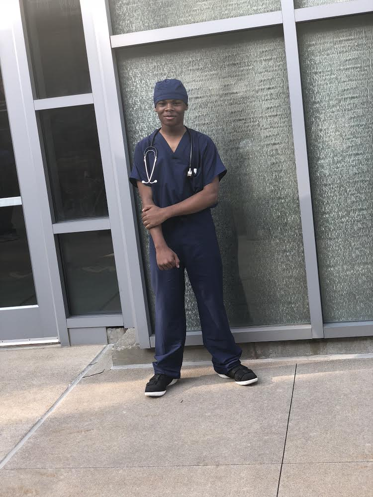

About Me
 
I created this website just so that I can showcase myself as a SMASH scholar. This is also my project for my Computer Science class
On June 17th, years ago, true genius was born. My mother gave birth to me after a long day of labor. Though I haven't always acted like it, I have been told that I was intelligent for as long as I can remember. In 8th grade, I remember embracing this genius and realizing that I wanted to go into the medical field. My science teacher told me that I had knowledge of the medical field that she had not even seen in most college students.
I value family, work ethic, education, and independance.